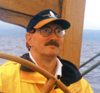
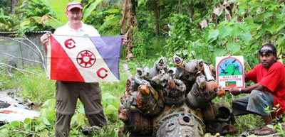
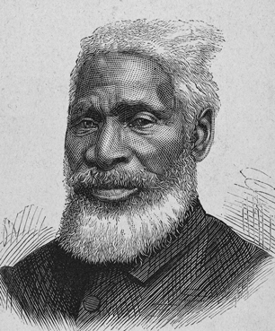
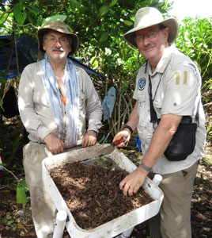
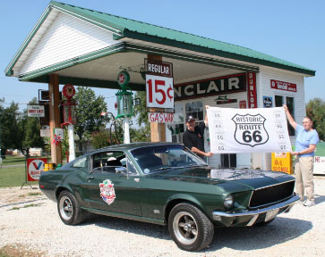
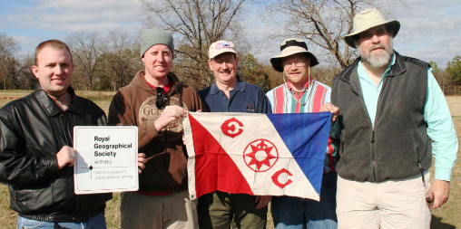
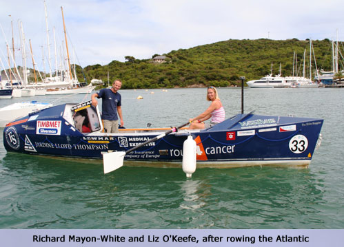
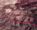

|

Toulmin sails a tall ship along the shore of the real “Bali h’ai” island paradise from “South Pacific”


|
Welcome to adventure! This website will take you places you have never heard of, or even imagined. Travel and excitement all over our planet is the focus, in two main areas – a book by your host about the “most traveled men;” and recent stories in the areas of land and sea adventures, missing aircraft, adventures in genealogy, and Vanuatu -- the least known, most amazing country on Earth.

Lew works with Capt. Mohammad of the Malaysian Army in a search for the “Missing Silk King of Thailand”
|
Llewellyn “Lew” Toulmin is the author of The Most Traveled Man on Earth, a non-fiction book about the two men (John Clouse and Charles Veley) who vied for years for the title of “most traveled man,” and about Lew’s adventures trying to catch up with them. (Lew does not claim to be the “most traveled man,” but is rated on Veley’s website as in the top 100,000th of a percent of the people on Earth, in terms of travel.) Click on the button on your lower left to learn more about this exciting book.
Lew is also the author of over 200 travel and adventure stories, and hundreds of professional reports and documents in the areas of disaster management, search and rescue/recovery, public administration reform, e-government, and information and communications technologies. He is a co-founder of the Missing Aircraft Search Team and has participated or led in-depth searches for missing aircraft, persons, ghost towns, plantations and battlefields.
Lew is a Fellow of the Royal Geographical Society and a Fellow of The Explorers Club, has worked in 30 countries abroad, and has traveled to over 140 of the world’s 196 countries.
|

Solving the mystery of a World War II Corsair fighter crash – Explorers Club Flag Expedition
|
He is an expert in genealogical research, has served as the head of two lineage societies, and is a member of over 40 lineage and heritage societies.
This website provides stories, content, briefings and reports in all these areas – adventure, travel, classic cars, genealogy, search and rescue, missing aircraft, missing persons, disaster response, e-government, international consulting, policy at the Prime Ministerial level, etc., etc. Some of the exciting and bizarre adventures you will encounter here – and nowhere else -- include:
- The forensic dog and DNA extraction expedition to a remote South Pacific island, to locate the Lockheed Electra of Amelia Earhart and Fred Noonan
- The first-ever genealogical analysis of the Henson clan, focusing on Reverend Josiah Henson, the heroic inspiration for Uncle Tom’s Cabin, and black explorer Matthew Alexander Henson, the co-discoverer of the North Pole.
- The first-ever presentation of the eleven-generation African-American descent of the Hemings-Freeman-Shorter clan, stretching from Africa through enslaved service at Monticello, Montpelier, and the White House, through freedom and service in the Union Army in Civil War battles, down to present-day distinguished educators.
- Reports on searches at President James Madison’s Montepelier plantation for previously-unknown barns, blacksmith’s shop, overseer’s house and other structures that were the engines of the Madison’s wealth, and in essence paid for the writing of our US Constitution.
- Analysis of the descendants of Matilda McCrear, a heroic woman who was kidnapped from west Africa, transported in 1860 on the infamous slave ship Clotilda to Mobile, Alabama; sold away to the Selma area; and survived slavery, statutory rape, forcible rape, the Civil War, sharecropping and Jim Crow; yet managed to become the mother of ten children and the matriarch of a successful family.
- Report on an archaeological search for the missing Banqueting Hall and Tudor Garden of Queen Elizabeth I at the massive Sudeley Castle in Gloucestershire.
- The first-ever scientific analysis of the search for Jim Thompson, the “Lost Silk King of Thailand” – and a road map to solving this 50-year-old mystery
- Weird things you never knew about Lawrence of Arabia
- A day in the life of a Papal Swiss Guard
- Driving all of Route 66, the Pacific Coast Highway, and the Lewis & Clark Trail in a 1968 “Bullitt” Mustang
- Tracing your family tree back to St. Gregory “The Illuminator,” in the year 250 C.E.
- A successful search for a missing aircraft just a few miles from Sedona, Arizona
- Floating down the Ohio and Mississippi rivers in 1809 in a twin flatboat
- Getting shipwrecked on the Dry Tortugas in 1856
- Vanuatu: home of “South Pacific,” of a tribe that worships Prince Philip as a god, of the dangerous land diving ceremony that inspired bungee jumping, and of a strange pig-killing ritual that dominates the country
- The dangerous life and missing plantation/battlefield of Brigadier-General Andrew Williamson, the “Benedict Arnold of South Carolina,” the highest ranking double agent in the American Revolution, and Lew’s direct ancestor
- The first-ever investigation into the previously unknown “Female Chiefs of Vanuatu.” For 120+ years anthropologists asserted that there were no Female Chiefs in the southwest Pacific. Lew found some and led an expedition to interview them -- see the “Vanuatu Mon Amour” section.
- And many more….
Click on the flag buttons on the left to begin your adventure. Enjoy!
|
Lew recently joined a team searching for and excavating a missing wooden monastery on the Holy Island of Lindisfarne in NE England. The monastery was famously attacked by Vikings in 793 CE -- this raid marked the start of the Viking Age. The pic is of a Viking Hnefatafl gaming piece found by the dig team.
|
 Matilda McCrear, heroic survivor of the slave ship Clotilda.
Matilda McCrear, heroic survivor of the slave ship Clotilda.
|

Reverend Josiah Henson, the heroic inspiration for Uncle Tom’s Cabin.
|
 Explorer Matthew Alexander Henson, co-discoverer of the North Pole.
Explorer Matthew Alexander Henson, co-discoverer of the North Pole.
|
 Sudeley Castle, location of the missing Banqueting Hall of Queen Elizabeth I.
Sudeley Castle, location of the missing Banqueting Hall of Queen Elizabeth I.
|
 Lew with Explorers Club Flag # 212 at the main excavation trench in the search for the missing Banqueting Hall of QE I.
Lew with Explorers Club Flag # 212 at the main excavation trench in the search for the missing Banqueting Hall of QE I.
|
|
Beautiful Nikumaroro Island in the Republic of
Kiribati, where Amelia Earhart may have landed
|

Lew Toulmin (right) and Arthur Rypinski sift coral,
looking for traces of Amelia Earhart
|

Lew and Susan Toulmin and their 1968 “Bullitt”
Mustang on Route 66
|
The new Miss Vanuatu in her native
costume from the island of Tanna
|

Lew and other leaders of the Brig. Gen. Andrew Williamson Revolutionary War plantation and
battlefield expedition, sanctioned by The Explorers Club and the Royal Geographical Society
|
Here are some pictures which illustrate Lew's new adventures. Click on the links above to take you to specific stories and adventures.

| |

Rollover images to view
|
|
|
A young "Notari" (female cultural leader) of Maewo island, Vanuatu (Huang/Menders photo)
|
|
|